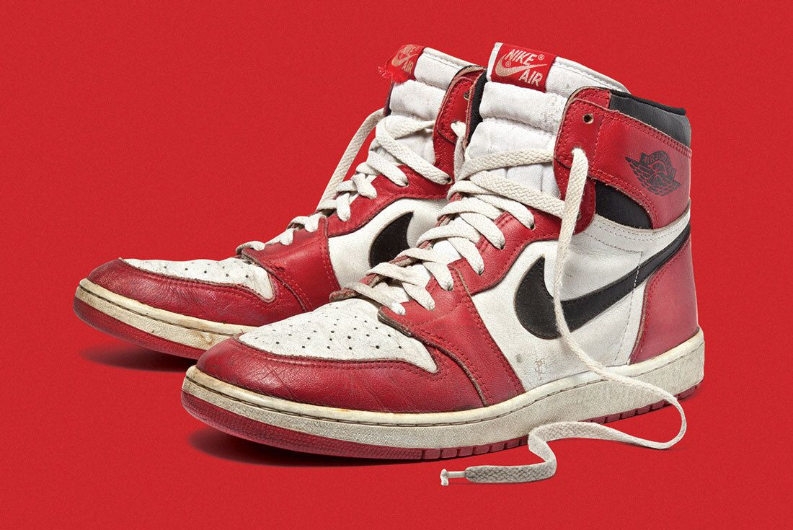
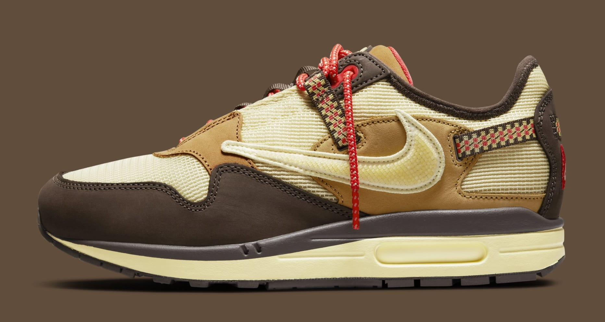
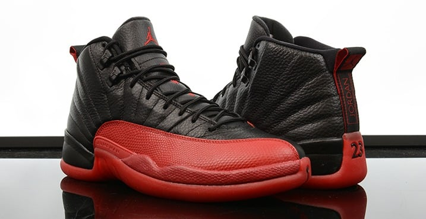
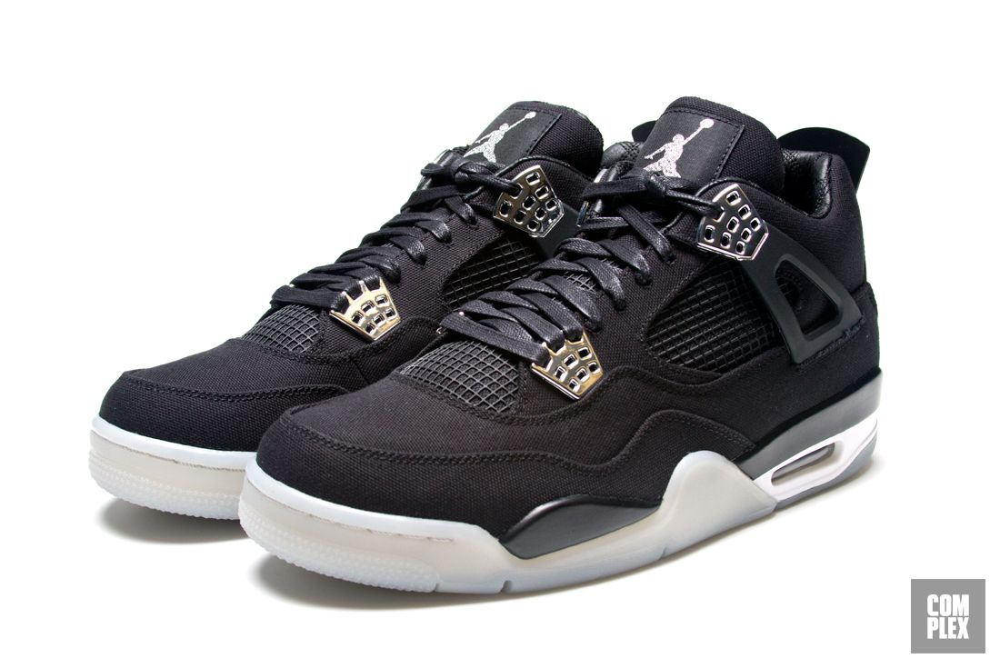
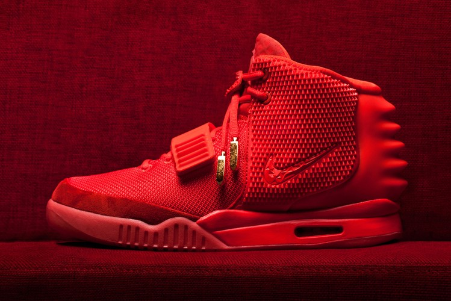

Welcome to PTK Sneakers Collection
The Sneaker Museum aims to elevate sneakers as fine art and showcase the collection as a catalyst for culture.
In 1984, Nike finally debuted Jordan's new line of sneakers and apparel. A radical innovation of style, color, and attitude, Air Jordan ruffled a scruffy landscape with the mind blowing momentum of the Beatles' British invasion of the 60’s. When my infatuation with the player became a devotion to the Jordan brand, which had an immense impact on sports and American culture, my collection grew and grew and grew!
|  |  |  |
|  |  |
 |
Our Mission
Founded in 2020, the Sneaker Museum is dedicated to presenting innovative, educational and artistic programming elevating sneaker art and culture. Our mission is to provide insight into the multifaceted heritage of sneaker culture through our permanent collection, artistic exhibitions, educational programs and institutional partnerships. The Sneaker Museum aims to enrich the sneaker ecosystem and serve its diverse audiences as an independent and dynamic organization providing learning through history, sports and the arts. We are on a mission to grow our community and bring all Sneakerheads together! Adam. Being a Sneakerhead is bigger than just holding the Sneakerhead NFT. Grateful to all that came and supported the mission of Sneaker Impact. Special thanks to the guys!